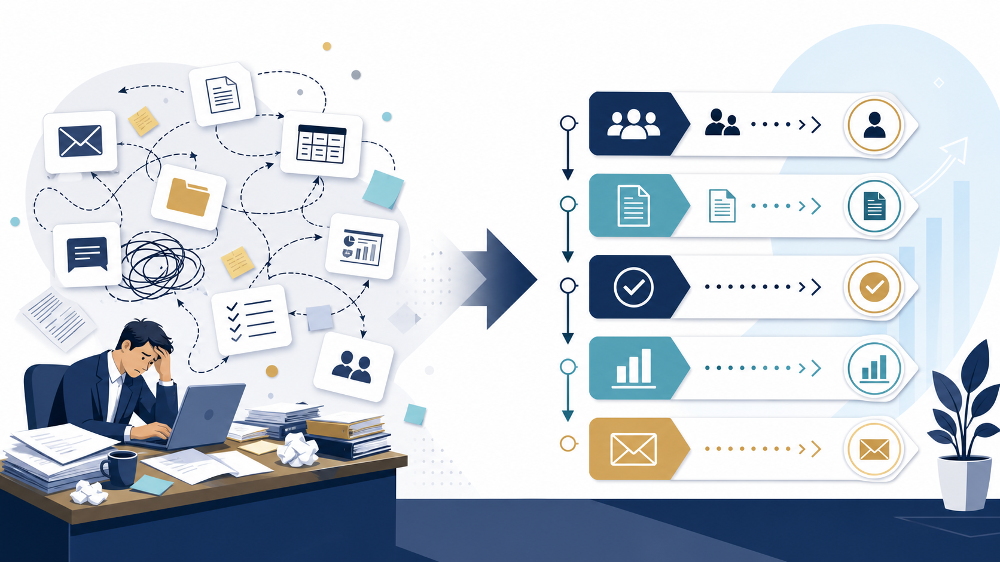

BUSINESS IMPROVEMENT / IDEAS
業務効率化のアイデア｜中小企業が最初に見直す定型業務10選
業務効率化は、いきなり新しいツールを増やすことではありません。毎週くり返す作業を見つけ、入力・判断・確認のどこを短くするか決めることから始まります。

業務効率化しやすいのは「定型・反復・確認可能」な仕事
業務効率化のアイデアを探すときは、「面倒そう」だけで選ばないことが大切です。手順が毎回変わる仕事は、ツールを入れても例外処理が増えます。逆に、入力と出力がある程度決まる仕事は、テンプレートやAIの補助を試しやすくなります。
入力が決まる
必要な項目や資料が毎回ほぼ同じである。
回数が多い
毎日・毎週発生し、合計時間が積み上がる。
人が判定できる
正しい状態をチェックリストにできる。
中小企業が最初に見直しやすい業務効率化のアイデア10選
| 業務 | 最初に整えること | 効率化の方向 |
|---|---|---|
| 議事録 | 決定事項・ToDoの書式 | テンプレートやAI下書き |
| 問い合わせ | 質問と回答の分類 | 一次回答の下書き |
| 見積書 | 商品・単価・条件の一覧 | 転記と計算の補助 |
| 定型メール | 宛先別の文面ルール | 返信案の作成 |
| 営業報告 | 入力項目と提出時刻 | 要約と未入力確認 |
| 採用連絡 | 候補者ステータス | 日程調整文の作成 |
| 資料探し | ファイル名と保管場所 | 検索・要約 |
| SNS投稿 | 商品情報と禁止表現 | 媒体別の下書き |
| 請求前確認 | 漏れのチェック項目 | 確認リストの自動化 |
| 社内FAQ | 回答の最新版 | 質問の振り分け |
優先順位は「時間×回数×標準化しやすさ」で決める
候補を並べるときは、作業時間だけでなく発生回数を掛けます。1回10分でも週30回なら、月の負担は大きくなります。そこへ標準化しやすさを加え、例外が少ないものから試すと、失敗したときの影響を抑えられます。
ただし、削減時間だけを成果にしないでください。確認ミス、引き継ぎのしやすさ、担当者の心理的負担も記録します。AI導入のメリットを検討するときも、売上の期待より先に「何が楽になったか」を測ると判断がぶれません。
業務効率化を小さく試す4ステップ
- 1週間測る：作業名、回数、1回の時間、差し戻しを記録します。
- 対象を1つに絞る：入力と出力が明確な業務だけを選びます。
- 人の確認を残す：自動化後も、誰が何を確認するか決めます。
- 結果を比べる：時間だけでなく、ミスや再作業も前後で比較します。
業務効率化のアイデアを実行に変える
候補を選んだら、いきなりツールを契約せず、現行の作業を一度そのまま記録します。誰が、何を見て、どの順で処理し、どこで差し戻されるかを書き出すと、AIではなく書式や承認の問題が見つかることがあります。
| 候補 | 最初に残す記録 | 改善後の確認 |
|---|---|---|
| 問い合わせ | 質問の種類、回答までの時間 | 回答の正確さと最新版 |
| 見積 | 転記回数、差し戻し理由 | 金額・条件・宛先 |
| 議事録 | 整理にかかった時間 | 決定事項と担当者 |
改善後は「何分短くなったか」だけでなく、誰が確認し、例外時にどこへ戻すかを手順書へ残します。担当者が休んでも再現できる状態になって初めて、個人の工夫ではなく業務改善になります。
効率化しない方がよい業務もある
判断基準が曖昧な業務、例外が多い業務、失敗すると顧客や従業員へ大きな影響が出る業務は、先に標準化と承認経路を整えます。個人情報や機密情報を扱う場合は、AI導入のリスクを確認してから試してください。
業務効率化は、作業を速くすることだけが目的ではありません。削減した時間を顧客対応、品質確認、教育のどこへ戻すかを決めることで、改善の効果を社内で説明しやすくなります。
担当者へ聞くべき5つの質問
業務効率化の候補は、経営者だけで決めると実態からずれます。担当者へ「何が入力として必要か」「どこで待つか」「何が差し戻されるか」「例外は何か」「改善した時間を何に使いたいか」を聞き、作業の見えない負担まで拾います。
- 作業は月に何回起きるか
- 前工程から何を受け取るか
- 誰の確認で止まるか
- 間違えると何が起きるか
- 減らした時間をどこへ戻すか
この回答をもとに、現状の手順と改善後の手順を同じ紙に並べます。改善後に入力や承認が増えているなら、ツール導入ではなく業務設計をやり直すサインです。
改善後のチェックリスト
業務効率化を定着させるには、導入したかではなく、現場で同じ手順を繰り返せるかを確認します。次の項目を担当者と一緒に見直します。
- 入力項目が前より増えていない
- 確認者と承認のタイミングが決まっている
- 例外案件を手作業へ戻せる
- 削減した時間の使い道が決まっている
- 担当者が変わっても同じ品質で使える
一つでも曖昧なら、ツールを増やす前に手順を整えます。改善は一度で完成させず、月次で差し戻しや相談内容を見て更新します。
よくある質問
業務効率化は担当者の仕事を減らすことですか？
必ずしも仕事そのものを減らす話ではありません。転記や探す時間を減らし、確認や顧客対応に時間を戻す考え方です。削減した時間の使い道まで決めると、改善が定着します。
AI導入と業務効率化は同じですか？
同じではありません。まず手順・入力・判断基準を整え、その一部にAIや自動化を使います。順序を逆にすると、曖昧な業務を速く処理するだけになり、確認負担が増えることがあります。